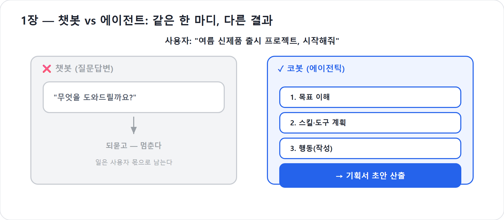

1장. 챗봇은 죽었다 — 일을 끝내는 에이전트
몇 해 전만 해도 우리가 인공지능에게 기대한 것은 '대답'이었다. 무언가를 물으면 그럴듯한 문장이 돌아왔고, 우리는 그것에 감탄했다. 그러나 일터로 돌아와 책상 앞에 앉으면 사정이 달라졌다. 챗봇은 회의록 작성법을 친절히 설명해 주었지만, 정작 오늘 회의록을 대신 써주지는 않았다. 방법은 알려주되 일은 끝내주지 않는다. 이 한 줄의 거리가 챗봇과 에이전트를 가른다.
이 장에서는 그 거리가 왜 생기는지, 그리고 Microsoft Copilot Studio 신버전이 왜 그 거리를 메우는 제품으로 다시 설계되었는지를 짚는다. 공식 Learn 문서는 새 에이전트 경험을 “자연어 우선 생성, 단일 작성 표면, 향상된 오케스트레이션 모델”로 설명한다. 말하자면 화면만 바뀐 것이 아니다. 대화 흐름을 미리 그리던 봇에서, 목표를 받아 추론하고 행동하는 에이전트로 중심축이 옮겨간 것이다.
쉬운 풀이 — 오케스트레이션
코봇이 지침·지식·도구를 언제 무엇을 꺼내 쓸지 스스로 판단하는 조율 엔진. 오케스트라의 지휘자에 해당한다.
2026년 기준 주의
이 책은 Copilot Studio의 새 에이전트 경험(new agent experience, 에이전틱 AI 미리보기/초기 출시)을 기준으로 한다. 클래식 기능은 옛 방식과의 비교를 위해서만 언급한다. 신버전 화면과 기능명은 2026년 6월 기준 공식 Learn과 공개 데모에서 확인한 범위로 설명하며, 미리보기 영역은 바뀔 수 있다.
묻는 말에 답할 뿐인 봇
챗봇을 한 사람에 비유하면 안내데스크 직원에 가깝다. 길을 물으면 길을 알려주고, 양식이 어디 있느냐고 물으면 양식의 위치를 알려준다. 성실하고 정확하지만, 그가 하는 일은 어디까지나 '질문에 답하기'다. 일을 맡기는 것이 아니라 정보를 얻는 관계다.
문제는 우리가 일터에서 원하는 것이 대개 정보가 아니라 결과라는 데 있다. “이번 분기 신제품 출시 프로젝트, 시작해줘”라는 말에 우리가 듣고 싶은 것은 프로젝트를 시작하는 방법에 대한 설명이 아니다. 우리는 기획서 초안이 나오기를, 일정이 잡히기를, 이해관계자에게 보낼 첫 보고 문안이 준비되기를 바란다. 챗봇은 이 요구 앞에서 멈춘다. 그것은 답하는 도구이지 일하는 도구가 아니기 때문이다.
클래식 챗봇이 나빴다는 뜻은 아니다. 정해진 질문에 정해진 답을 주고, 안내 문구를 정확히 보여주고, 사람에게 필요한 정보를 연결하는 데에는 충분히 유용했다. 다만 구조가 그 일을 위해 만들어져 있었다. 사용자가 어떤 말을 하면 어떤 토픽으로 보내고, 어떤 노드에서 어떤 메시지를 보여주고, 조건에 따라 어느 갈래로 보낼지 미리 그려야 했다. 그래서 챗봇은 영리해 보였지만, 실제로는 미리 깔아둔 레일 위를 달리는 열차에 가까웠다.
이 책이 “수다 떠는 챗봇은 죽었다”고 말할 때의 의미가 여기 있다. 대화형 UI가 사라졌다는 말이 아니다. 대화만 잘하는 것으로 충분하던 시대가 끝났다는 뜻이다.
목표를 받아 스스로 움직이는 봇
에이전트는 다르다. 에이전트에게 같은 말을 건네면, 그것은 '무엇을 답할까'가 아니라 '무엇을 해야 할까'를 생각한다. 목표를 받아, 그 목표를 이루기 위한 단계를 스스로 추론하고, 단계마다 필요한 행동을 실행한다. 목표 → 추론 → 행동, 이 세 박자로 일을 끝내는 존재가 에이전트다.
“이번 분기 신제품 출시 프로젝트, 시작해줘”라는 한 마디에, 에이전트는 출시 프로젝트라면 먼저 목표와 범위를 정해야 한다고 판단한다. 빠진 정보가 있으면 되묻고, 회사 문서 템플릿을 지식에서 찾아보고, 필요하면 프로젝트 기획 Skill을 불러 초안을 만든다. 반복 발송이나 승인 절차가 필요하다고 판단하면 Workflows, 곧 플로봇에게 넘길 수도 있다. 안내데스크 직원이 아니라, 목표를 주면 알아서 끝내려 하는 신입사원에 가깝다.
이 신입사원이 바로 앞으로 우리가 키울 코봇(Cobot)이다. 코봇은 사람을 대체하는 괴물이 아니라, 사람 곁에서 함께 일하는 협동 동료다. 혼자 모든 것을 완벽히 아는 존재가 아니라, 지침을 받고, Skill이라는 모자를 쓰고, 지식이라는 교과서를 읽고, 도구라는 손발을 빌려 일을 끝내는 동료다.
공개 데모들이 반복해서 보여준 장면도 이 변화였다. 새 빌더에서 프로젝트 매니저 에이전트에게 요구사항 정리, 설계, 테스트, 계획 수립 같은 업무를 맡기면, 에이전트는 하나의 긴 답변을 쓰는 데 그치지 않는다. 각 업무에 맞는 Skill을 찾아 단계적으로 산출물을 만든다. “답변 생성”에서 “작업 수행”으로 무게중심이 옮겨간 것이다.
코봇 한마디
"저는 ‘방법’을 설명하는 봇이 아니라 ‘결과’를 만드는 신입이에요. 목표 → 추론 → 행동, 이 세 박자로 일을 끝냅니다!"
같은 모델, 다른 결과
여기서 흔한 오해 하나를 바로잡아야 한다. 챗봇과 에이전트의 차이가 '더 똑똑한 모델'에서 온다는 생각이다. 사실은 절반만 맞다. 좋은 모델은 중요하다. 그러나 같은 거대언어모델(LLM)을 두 봇이 똑같이 쓰더라도 결과는 갈린다. 차이를 만드는 것은 모델의 머리만이 아니라, 그 머리 위에 얹은 구조다.
Copilot Studio 새 경험의 핵심은 향상된 오케스트레이션(enhanced orchestration)이다. 공식 Learn의 비교 문서는 클래식 경험이 토픽, 플로, 분기 논리, 명시적 구성 노드 중심이었다고 설명한다. 반면 새 경험은 자연어 지침과 추론이 에이전트 행동을 이끈다. 또 클래식에서는 오케스트레이션 방식을 구성할 수 있었지만, 새 경험에서는 모든 에이전트가 향상된 오케스트레이션 런타임을 사용한다. 선택 옵션이 아니라 기본 엔진이다.
이 말은 중요하다. 신버전의 코봇은 단순히 예쁜 새 화면을 입은 챗봇이 아니다. 지침을 더 잘 따르고, 여러 단계가 이어지는 장기 작업을 버티며, 중간 결과를 보고 다음 행동을 다시 정하는 방향으로 설계된 런타임 위에 서 있다. 이 책의 표현으로 바꾸면, 모델 하나를 놓고 대화하는 것이 아니라 오케스트레이터를 설계하는 일에 가까워진다.
한걸음 더
오케스트레이터는 오케스트라의 지휘자와 같다. 바이올린이 모델이라면, 악보는 지침이고, 악기별 파트보는 Skill이며, 무대 장치는 도구와 Workflow다. 좋은 연주는 악기 성능만으로 나오지 않는다. 무엇을 언제 어떻게 연주할지 엮는 지휘가 필요하다.
"더 똑똑한 머리(모델)만으로 제가 일을 잘하는 건 아니에요. 그 머리를 언제·어떻게 쓸지 엮는 게 진짜 비결이죠. 그래서 여러분이 키워주셔야 해요!"
유사 AI 챗봇에서 에이전틱 AI로
그래서 과거의 많은 업무 챗봇은 엄밀히 말해 “유사 AI 챗봇”에 가까웠다. 겉으로는 자연어로 대화했지만, 실제 작동 방식은 상당 부분 미리 만든 대본과 분기였다. 사용자의 말을 이해하는 듯 보여도, 설계자가 예상한 문장과 예상한 갈래 안에서만 안정적으로 움직였다. 예상 밖의 요청이 오면 답변 품질이 급격히 흔들리거나, 결국 사람에게 넘겨야 했다.
새 경험은 그 구조를 뒤집는다. 토픽을 먼저 그리는 대신, 에이전트의 목적과 행동을 자연어로 설명한다. Build 탭에는 지침, 지식, 도구와 Skill, 모델, 연결된 에이전트가 한 표면에 모인다. 에이전트는 이 구성요소를 바탕으로 “지금 무엇을 해야 하는가”를 판단한다. 토픽은 신버전에서 현재 방식의 중심이 아니다. 정확히 말하면, 옛 토픽이 맡던 자리는 Skill + Workflows 조합이 나누어 맡는다. 판단하며 전문성을 꺼내야 하는 부분은 Skill로, 결정론적으로 반복해야 하는 절차는 4부에서 다룰 Workflows로 보낸다.
이 변화가 “에이전틱”이라는 말의 실체다. 에이전틱 AI는 말을 잘하는 AI가 아니라, 목표를 향해 여러 단계를 밟고, 필요한 능력을 불러오고, 중간에 막히면 되묻거나 다른 경로를 찾는 AI다. 물론 마법은 아니다. 잘못된 지침, 흐릿한 Skill 설명, 과도한 권한, 검증 없는 배포는 여전히 문제를 만든다. 그래서 이 책은 코봇을 한 번에 완성품으로 만들지 않는다. 입사시키고, 가르치고, 테스트하고, 내보내고, 모니터링하며 키운다.
“알려줘”에서 “해줘”로
이 전환은 한 사람의 취향 문제가 아니라 시대의 요구가 바뀐 결과다. 누구나 손쉽게 그럴듯한 결과물을 만들어내는 이른바 바이브코딩(vibe coding)의 시대에, 사람들이 AI에게 거는 기대도 함께 커졌다. 예전에는 “AI야, 알려줘”였다. 정보를 구하는 요청이다. 지금은 “AI야, 해줘”로 옮겨갔다. 동작하는 결과물을 달라는 요청이다.
정보를 주는 일은 챗봇으로 충분했다. 그러나 동작하는 결과물을 만들어내는 일은 챗봇의 능력 밖이다. 회의록 작성법을 알려주는 것과, 실제 회의 내용을 읽어 의사결정·할 일·리스크를 정리하고, 담당자에게 보낼 초안을 만드는 것은 다른 일이다. 경비 처리 규정을 설명하는 것과, 영수증을 분류하고 승인 라인을 태우며 누락 정보를 되묻는 것도 다른 일이다.
한국 업무 현장에서 이 차이는 더 선명하다. “부장님 보고용으로 정리해줘”라는 말에는 단순 요약 이상의 맥락이 들어 있다. 너무 길면 안 되고, 금액은 원화로 명확해야 하며, 리스크는 숨기면 안 되지만 불필요하게 겁을 주어서도 안 된다. 이런 일은 규칙 몇 개로만 끝나지 않는다. 지침, 조직 지식, 판단, 산출물 형식, 때로는 승인 절차가 함께 엮여야 한다.
왜 하필 지금인가
그렇다면 왜 이 전환이 지난해도 내년도 아닌 지금 일어나는가. 두 가지 변곡점이 겹쳤기 때문이다. 첫째, 모델이 ‘추론’을 갖추기 시작했다. 단순히 다음 단어를 잘 맞히는 수준을 넘어, 목표를 향해 여러 단계를 계획하고 중간에 판단을 끼워 넣을 수 있게 되면서, 비로소 ‘행동하는 AI’가 현실이 되었다. 둘째, 코딩이라는 장벽이 낮아졌다. 이제 일을 자동화하기 위해 모든 사람이 프로그래밍 언어를 배울 필요는 없다. 업무를 설명하고, 지침을 다듬고, 어떤 절차는 Workflow로 고정할지 판단할 수 있으면 된다.
Copilot Studio 새 경험은 이 두 변곡점을 제품 구조로 받아들였다. 에이전트를 만들 때 자연어 설명에서 시작하고, 작성 표면을 Build · Preview · Evaluate · Monitor 네 탭으로 단순화하며, 평가와 모니터링을 처음부터 라이프사이클 안에 넣었다. “일단 챗봇을 만들고 나중에 운영을 생각하라”가 아니라, 처음부터 “일하는 동료를 만들고 검증하고 관찰하라”는 구조다.
함정
“에이전트니까 알아서 다 하겠지”라는 기대는 위험하다. 에이전트는 목표를 향해 추론하지만, 회사의 기준과 권한, 금지선은 사람이 정해야 한다. 코봇은 신입사원이다. 신입에게 일을 맡기되, 매뉴얼과 검토 없이 회사 메일 발송 권한부터 주지는 않는다.
수다 떠는 챗봇은 죽었다
정리하면 이렇다. 질문에 답하기만 하던 봇의 시대는 저물었다. 그렇다고 모든 봇이 사라진 것은 아니다. 수다 떠는 챗봇이 죽은 자리에, 일하는 봇 둘이 남았다. 하나는 목표를 받아 스스로 생각하고 판단하는 봇이고, 다른 하나는 정해진 절차를 어김없이 도는 봇이다. 앞으로 이 책에서 우리는 전자를 코봇, 후자를 플로봇이라 부를 것이다.
코봇은 Agent다. 모호함을 견디고, 지침을 해석하고, Skill을 불러 일을 만든다. 플로봇은 Workflows다. 같은 입력에는 같은 절차로 움직이고, 반복·승인·발송처럼 흔들리면 안 되는 일을 맡는다. 둘은 경쟁자가 아니다. 판단은 코봇, 절차는 플로봇. 이 한 줄이 앞으로 책 전체의 지도다.
한눈에 — 코봇과 플로봇
코봇(Agent) 플로봇(Workflow) 운전대 추론·지침 절차·조건 강점 모호함·맥락·판단·작성 반복·승인·발송·감사 결과 상황 따라 달라질 수 있음 같은 입력이면 같은 경로 어울리는 말 “알아서 정리해줘” “항상 이 순서로 처리해줘” 이 한 장의 대비가 책 전체의 나침반이다. 자세한 갈림은 3장에서 잡는다.
"복잡하면 딱 한 줄만 기억하세요. 판단은 저(코봇), 절차는 플로봇! 이게 이 책 전체의 지도예요."
핵심 정리
| # | 요점 |
|---|---|
| 1 | 챗봇은 질문에 답하고, 에이전트는 목표를 받아 추론하고 행동해 일을 끝낸다. |
| 2 | 차이를 만드는 것은 모델만이 아니라, 지침·Skill·도구·Workflow를 엮는 오케스트레이션 구조다. |
| 3 | Copilot Studio 새 경험은 자연어 우선 생성과 향상된 오케스트레이션을 모든 에이전트에 적용한다. |
| 4 | 클래식의 토픽·분기 중심 설계는 옛 방식이다. 신버전에서는 Skill + Workflows 조합이 그 자리를 나누어 맡는다. |
| 5 | 사용자의 요구는 “알려줘”에서 “해줘”로 확장됐다. 정보보다 동작하는 결과물이 중요해졌다. |
| 6 | 코봇은 판단하는 Agent, 플로봇은 결정론적 Workflows다. 둘의 협업이 이 책의 중심 구조다. |
자주 묻는 질문(FAQ)
| 질문 | 답변 |
|---|---|
| 그럼 챗봇은 이제 쓸모없나요? | 단순 안내·정보 제공에는 여전히 유효하다. 다만 “일을 끝내야 하는” 요구에는 에이전트와 Workflow가 필요하다. |
| 결국 더 똑똑한 모델이 핵심 아닌가요? | 모델은 중요하지만 충분조건은 아니다. 같은 모델도 지침, Skill, 도구, Workflow를 어떻게 엮느냐에 따라 결과가 갈린다. |
| 클래식 토픽은 완전히 사라졌나요? | 클래식 에이전트에는 남아 있다. 그러나 이 책이 다루는 새 경험에서는 토픽을 중심으로 만들지 않는다. 토픽의 역할은 Skill + Workflows 조합으로 재해석한다. |
| 에이전트가 스스로 행동한다면 위험하지 않나요? | 그래서 지침, 권한, 도구 경계, Preview, Evaluate, Monitor가 중요하다. 자율성은 검증과 운영 구조 안에서만 가치가 있다. |
다음 장에서는
챗봇의 시대가 저물고 일을 끝내는 에이전트가 왔다는 것까지 보았다. 그런데 Microsoft는 왜 잘 돌아가던 Copilot Studio를 통째로 다시 지었을까? 다음 2장에서는 그 ‘재건축’의 이유를 들여다본다 — 신버전이 버튼을 옮긴 UI 리뉴얼이 아니라 AI 코어 교체인 까닭, 그리고 그 위에 새로 올라선 새 에이전트 경험과 새 워크플로우의 정체다.
실습 — 코봇 키우기 1단계 (종이 실습): 챗봇과 에이전트를 가른다

〔이어받기〕 시작점이다. 아직 아무것도 만들지 않는다 — 머릿속과 종이 위에서 하는 실습이다.
1-a. 같은 한 문장을 둘에게 던진다. “여름 신제품 출시 프로젝트, 시작해줘”를 ①일반 챗봇과 ②에이전트(코봇)에게 던진 모습을 표로 나란히 적어 본다.
1-b. 차이를 한 줄로 적는다. 챗봇은 “무엇을 도와드릴까요?”로 되묻고 멈춘다. 코봇은 기획서 초안을 향해 스스로 움직인다.
1-c. 내 업무로 옮겨 본다. 내가 실제로 맡은 업무 한 가지를 골라 같은 비교를 해 본다 — “알려줘”가 아니라 “해줘”로 바뀌는 지점을 찾는다.
〔성장〕 코봇은 아직 없다. 그러나 “되묻는 봇”이 아니라 “일을 끝내는 동료”라는 목표 상(像)이 머릿속에 박힌다. 〔검증 포인트〕 챗봇과 에이전트의 차이를 내 프로젝트 문장 하나로 설명할 수 있으면 통과.